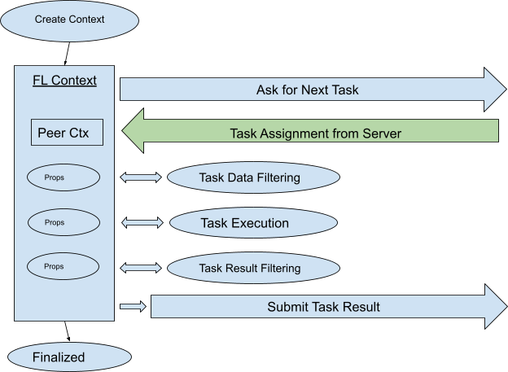

FLContext¶
One of the most important features of NVIDIA FLARE is nvflare.apis.fl_context to pass data between the FL
components. FLContext is available to every method of all FLComponent types (Controller, Aggregator, Filter,
Executor, Widget).
- Through the FL Context, the component developer can:
Get services provided by the underlying infrastructure
Share data with other components of the FL system, even including components in the peer endpoints (between server and clients)
FLContext can be thought of as a Python dictionary that stores key/value pairs. Data items stored in FLContext
are called properties, or props for short. Props have two attributes: visibility and stickiness.
Visibility¶
Determines whether the prop is only visible to local components that reside in the same process or remote components that reside in the peer endpoint:
Props only visible to local components are private
Props that are also visible to remote components are public.
Stickiness¶
Determines whether the prop is only to be scoped in the current FL Context or if it is to be made available to all future FL Contexts:
Props that will become available in all future FL Contexts are sticky. This is useful to share objects dynamically created by a component to other components.
Props that are only to be scoped in the current FL Context are non-sticky.
Attention
Since public props will be shared with peer endpoints, be very careful about them - they must not be sensitive to privacy! Also since the prop will be sent to the peers through messages, the prop must be serializable.
Accessing Props in FLContext¶
To set a prop into the FL Context, use the set_prop() method of FLContext:
def set_prop(self, key: str, value, private=True, sticky=False)
If the prop already exists in the context, its value is updated with the new value. If the prop is not in the context, it is added to the context.
Note
All props have unique names, which must be strings. Once a prop is placed into the FL Context, its attributes can never be changed.
To retrieve a prop, use the get_prop() method:
def get_prop(self, key, default=None)
To remove a prop from the FL Context, use remove_prop() method:
def remove_prop(self, key: str)
Note
The prop is only removed from the FL Context the remove_prop method is called on.
There are many other useful methods for FL Context. Please see fl_context.py for detail.
Note
Prop names must be strings. Stay away from prop names starting with double underscores “__”. These are reserved for the framework. You cannot remove such props from FL context.
Permanent Props in FL Contexts¶
Some props are always added to the FL Context by the framework.
Engine (fl_ctx.get_engine())¶
The engine represents the underlying services that can be used by the application. See ServerEngineSpec and/or ClientEngineSpec for services they provide.
Run Number (fl_ctx.get_run_number())¶
FL application is always running within a RUN, which has a unique ID number.
Identity Name (fl_ctx.get_identity_name())¶
Each running endpoint has a unique identity name. You can get the identity name of the endpoint your application is running in.
Peer Context (fl_ctx.get_peer_context())¶
When processing a message from the peer, the FLContext object passed to your callback functions contains the Peer Context, which contains the public props from the peer endpoint. Note that not all FL Contexts have peer contexts - only those passed to your callback functions (before_task_sent, after_task_sent, and result_received on the Server side, and the executor’s execute() method on the Client side) have peer contexts. Since filters are invoked to process data between the peers, the FLContext passed to filters also contains a peer context.
App Root (fl_ctx.get_prop(FLContextKey.APP_ROOT))¶
The name of the current RUN’s app folder.
Runtime args (fl_ctx.get_prop(FLContextKey.ARGS))¶
Runtime args used to start the server/client process. This is a dict.
Workspace Root (fl_ctx.get_prop(FLContextKey.WORKSPACE_ROOT))¶
The name of the workspace root folder.
Workspace Object (fl_ctx.get_prop(FLContextKey.WORKSPACE_OBJECT))¶
The workspace object (of nvflare.apis.workspace.Workspace type).
Secure Mode (fl_ctx.get_prop(FLContextKey.SECURE_MODE, True))¶
Whether NVIDIA FLARE is running in secure mode or not.
FL Context Lifecycle¶
The NVIDIA FLARE system is a multi-threaded messaging environment. A new FLContext instance is created when processing a new message (in the messaging thread). At any time, there could be multiple instances of FL Contexts.
The following is the general lifecycle of a FL Context:
Created: Never create a new FL Context directly with FLContext()! Always call engine.new_context(). Engine creates a new FL Context with the FL Context Manager
nvflare.api.fl_context.FLContext(FLCM) associated with the engine. The FLCM keeps the permanent props and all sticky props created by components. When creating a new FL Context, the FLCM copies these props to the created FL Context.Used: The FL Context is used by system and/or application logic - props are read and placed into the context. The FL Context is usually passed to multiple components, and these components can share data thru the FL context passed thru them (one component creates a prop and is used by others).
Finalized: Sticky props created/updated during the use of the context are synched back to the FLCM, so that FL contexts created afterwards will contain these props.
Keep in mind that sticky props syncing only happens when the context is finalized, not at the moment that the prop is created.
Client Side FL Context¶
- The client-side workflow is a simple loop of:
Ask for the next task to do
Do the task
Submit task result
- In each iteration:
A new FLContext instance is created to request the next task from the server.
When a new task assignment is received, the FL context is augmented with the “peer context” received from the server
- Task related data is added to the FL context:
Task Name (FLContextKey.TASK_NAME)
Task ID (FLContextKey.TASK_ID)
Task Data (FLContextKey.TASK_DATA)
If any task data filters are configured for this task, the filters are called with this context. Additional props could be added by the filters.
The FL context is then used for the task execution, during which additional props may be added.
The task result (FLContextKey.TASK_RESULT) is added to the FL context.
If any task result filters are configured for this task, the filters are called with this context. Additional props could be added by the filters.
This FL context is used to send task results to the Server. Public props in the context will be sent to the Server.
Finally, this context is finalized - sticky props (if any) are synced with the FLCM.
Note
If any event is fired during the processing, this FLContext instance is also passed to all event handlers, which could create additional props.
The following diagram shows the lifecycle of the FL context for each iteration.
In the Peer Context, following props from the Server are available:
Run Number: peer_ctx.get_run_number())
Server Side FL Context¶
Task Request Processing¶
When processing the “ask for next task” request from the client, the Server creates a new FL Context. This context is used for the task’s before_task_sent and after_task_sent callbacks, task data filters (if any), and any event handling fired during the task request processing.
Note that this context contains the “peer context” of the client.
- In the Peer Context, following props from the Client are available:
Run Number: peer_ctx.get_run_number()
Client Name: peer_ctx.get_identity_name()
May have additional public props
Task Result Processing¶
When processing the “submit task result” request from the client, the Server creates a new FL Context. This context is used for the task’s result_received callback, task result filters (if any), and any event handling fired during the task result processing.
Note that this context contains the “peer context” of the client.
- In the Peer Context, following props from the Client are available:
Run Number: peer_ctx.get_run_number()
Client Name: peer_ctx.get_identity_name()
Task ID: peer_ctx.get_prop(FLContextKey.TASK_ID)
Task Name: peer_ctx.get_prop(FLContextKey.TASK_NAME)
May have additional public props
Task Done Processing¶
When a task is completed (done normally or timed out), the task’s task_done callback (if specified) is called. A new FL Context is created at the task completion. This context is used for the task’s task_done callback, and any event handling fired during the task completion processing.
Note that this context does not contain a peer context.
Controller’s Control Flow¶
The controller’s control_flow method is called at the beginning of the RUN. When the control_flow returns, the RUN is completed.
At the beginning of the RUN, a new FL Context is created, and is used to call the control_flow method of the controller. This context “lives” until the end of the control loop. This is a long-lived context. This context does not contain a peer context.
Peer Context¶
As discussed above, any components can access a FLContext and get/set props from/into it. This allows components running within the same process to share data.
The data sharing is not limited to components within the same process (Server or Client). Data props can be shared between communicating peers! This is done through what is called “peer context”:
When the client sends the “ask for next task” request, public props in the client’s FLContext are also sent to the Server.
When the Server receives the request and the props from the client, the Server first prepares a new FLContext object X for the request processing, creates another FLContext object to hold the props from the client and sets this FLContext object into X.
All the processing logic has access to X, and can therefore access the peer context via x.get_peer_context() call.
Similarly, during the processing, any involved component can add public props to X, and all such props will be sent back to the Client, which will become content of the “peer context” on the Client side.
What is in the peer context? It depends on what public props are in the FLContext before being sent to the peer. But in general, the following props are always available:
Run Number (fl_ctx.get_run_number()). This is the ID number of the RUN on the peer site. Note that the peer’s RUN number may be different from the host site’s RUN number in case the two sites get out of sync.
Identity Name (fl_ctx.get_identity_name()). This is the unique name of the peer site (client name or server name).
Additional props are available from the peer context, depending on the communication scenarios.
Note
Peer context should be treated as read-only.
Create ad-hoc FL Context¶
All the contexts discussed above are created and managed by the NVIDIA FLARE framework. They should meet most of your needs. However, you can create ad-hoc contexts in your program if necessary. To be thread safe, you should create a new FLContext instance for each thread - threads should not share the same FLContext object. To create a FLContext object, do this:
ctx = engine.new_context()
As a best practice, when using the context you created, you should use a “with” block so that any sticky props created in your processing logic will be synced back to the FLCM when the “with” block exits:
with ctx:
processing logic
API Specification¶
Property access¶
def set_prop(self, key: str, value, private=True, sticky=True)
def get_prop(self, key, default=None)
With set_prop, you can set any object to the context by providing a key and the value of the object.
When private is set to True, this property can only be used locally.
When private is set to False, this property can be shared to its peer during the FL communication.
In other words, when an FL client is communicating with other clients, the non-private properties in the FLContext will be sent to those clients.
There are many predefined keys used by different FLComponent functions. If you want to use the components that
NVIDIA FLARE provide, please refer to Data available in the shared FLContext and nvflare.apis.fl_constant for
details. Otherwise, you can write your own components by extending FLComponent.